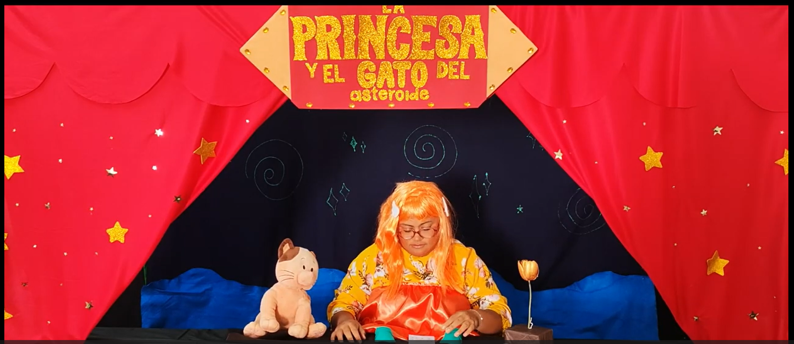

Tecnica Usada
Nuestra tecnica usada fue de "Enanos Falsos" Una obra de teatro de enanos falsos es una representación escénica en la que los personajes que aparentan ser personas de talla baja son interpretados por actores de estatura promedio mediante el uso de efectos visuales, vestuarios modificados, escenografía a escala o técnicas de actuación que simulan enanismo.
En nuestro caso utilizamos zapatos pequeños debajo de ropa que simulaba que estabamos de pie, no estuvimos arrodillados o algo por el estilo si no estuvimos sentados en una mesa como puede apreciarse en la imagen, parece que estamos de pie pero no, es una mesa. Lo demás estará explicado en el apartado de escenografía(👉ﾟヮﾟ)👉
⬅️ Volver